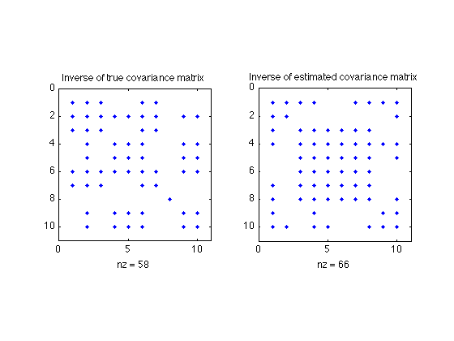

% Joëlle Skaf - 04/24/08 % (a figure is generated) % % Suppose y \in\reals^n is a Gaussian random variable with zero mean and % covariance matrix R = \Expect(yy^T), with sparse inverse S = R^{-1} % (S_ij = 0 means that y_i and y_j are conditionally independent). % We want to estimate the covariance matrix R based on N independent % samples y1,...,yN drawn from the distribution, and using prior knowledge % that S is sparse % A good heuristic for estimating R is to solve the problem % maximize logdet(S) - tr(SY) % subject to sum(sum(abs(S))) <= alpha % S >= 0 % where Y is the sample covariance of y1,...,yN, and alpha is a sparsity % parameter to be chosen or tuned. % Input data rand('state',0); randn('state',0); n = 10; N = 100; Strue = sprandsym(n,0.5,0.01,1); R = inv(full(Strue)); y_sample = sqrtm(R)*randn(n,N); Y = cov(y_sample'); alpha = 50; % Computing sparse estimate of R^{-1} cvx_begin sdp variable S(n,n) symmetric maximize log_det(S) - trace(S*Y) sum(sum(abs(S))) <= alpha S >= 0 cvx_end R_hat = inv(S); S(find(S<1e-4)) = 0; figure; subplot(121); spy(Strue); title('Inverse of true covariance matrix') subplot(122); spy(S) title('Inverse of estimated covariance matrix')
Calling Mosek 9.1.9: 503 variables, 223 equality constraints
For improved efficiency, Mosek is solving the dual problem.
------------------------------------------------------------
MOSEK Version 9.1.9 (Build date: 2019-11-21 11:32:15)
Copyright (c) MOSEK ApS, Denmark. WWW: mosek.com
Platform: MACOSX/64-X86
Problem
Name :
Objective sense : min
Type : CONIC (conic optimization problem)
Constraints : 223
Cones : 112
Scalar variables : 238
Matrix variables : 2
Integer variables : 0
Optimizer started.
Presolve started.
Linear dependency checker started.
Linear dependency checker terminated.
Eliminator started.
Freed constraints in eliminator : 1
Eliminator terminated.
Eliminator started.
Freed constraints in eliminator : 0
Eliminator terminated.
Eliminator - tries : 2 time : 0.00
Lin. dep. - tries : 1 time : 0.00
Lin. dep. - number : 0
Presolve terminated. Time: 0.00
Problem
Name :
Objective sense : min
Type : CONIC (conic optimization problem)
Constraints : 223
Cones : 112
Scalar variables : 238
Matrix variables : 2
Integer variables : 0
Optimizer - threads : 8
Optimizer - solved problem : the primal
Optimizer - Constraints : 220
Optimizer - Cones : 112
Optimizer - Scalar variables : 236 conic : 236
Optimizer - Semi-definite variables: 2 scalarized : 265
Factor - setup time : 0.00 dense det. time : 0.00
Factor - ML order time : 0.00 GP order time : 0.00
Factor - nonzeros before factor : 1.13e+04 after factor : 1.51e+04
Factor - dense dim. : 0 flops : 1.37e+06
ITE PFEAS DFEAS GFEAS PRSTATUS POBJ DOBJ MU TIME
0 6.1e+01 4.9e+01 6.0e+01 0.00e+00 5.082783840e+01 -8.051020016e+00 1.0e+00 0.01
1 2.1e+01 1.7e+01 3.0e+01 -8.79e-01 1.217303462e+02 7.326525751e+01 3.4e-01 0.01
2 1.1e+01 8.7e+00 1.0e+01 -1.15e-01 8.231499201e+01 5.583913632e+01 1.8e-01 0.01
3 7.7e+00 6.2e+00 6.1e+00 8.43e-01 5.277890064e+01 3.414156858e+01 1.3e-01 0.02
4 3.6e+00 2.9e+00 1.8e+00 9.69e-01 1.781699073e+01 9.473958843e+00 6.0e-02 0.02
5 3.1e+00 2.5e+00 1.7e+00 7.34e-01 1.410839818e+01 5.922417259e+00 5.2e-02 0.02
6 1.3e+00 1.1e+00 4.6e-01 9.57e-01 -2.791851684e+00 -6.195477449e+00 2.2e-02 0.02
7 9.7e-01 7.8e-01 3.8e-01 5.16e-01 -7.183712277e+00 -1.047247820e+01 1.6e-02 0.02
8 3.4e-01 2.7e-01 8.1e-02 8.82e-01 -1.713503096e+01 -1.831741253e+01 5.6e-03 0.02
9 2.0e-01 1.6e-01 4.9e-02 3.98e-01 -2.091268740e+01 -2.184632115e+01 3.3e-03 0.03
10 1.1e-01 8.7e-02 2.2e-02 6.17e-01 -2.432696249e+01 -2.489972434e+01 1.8e-03 0.03
11 3.9e-02 3.1e-02 5.5e-03 7.24e-01 -2.806687910e+01 -2.829261309e+01 6.3e-04 0.03
12 1.8e-02 1.4e-02 1.9e-03 8.04e-01 -2.961876411e+01 -2.972995868e+01 2.9e-04 0.03
13 1.8e-03 1.5e-03 6.5e-05 9.29e-01 -3.105635218e+01 -3.106814847e+01 3.0e-05 0.03
14 8.5e-05 6.8e-05 6.6e-07 9.88e-01 -3.123140897e+01 -3.123195670e+01 1.4e-06 0.03
15 1.4e-06 1.1e-06 1.3e-09 9.99e-01 -3.123991549e+01 -3.123992431e+01 2.2e-08 0.04
16 5.7e-08 4.6e-08 1.2e-11 1.00e+00 -3.124004920e+01 -3.124004957e+01 9.4e-10 0.04
Optimizer terminated. Time: 0.04
Interior-point solution summary
Problem status : PRIMAL_AND_DUAL_FEASIBLE
Solution status : OPTIMAL
Primal. obj: -3.1240049204e+01 nrm: 2e+02 Viol. con: 4e-07 var: 0e+00 barvar: 0e+00 cones: 0e+00
Dual. obj: -3.1240049573e+01 nrm: 2e+00 Viol. con: 0e+00 var: 3e-07 barvar: 7e-09 cones: 0e+00
Optimizer summary
Optimizer - time: 0.04
Interior-point - iterations : 16 time: 0.04
Basis identification - time: 0.00
Primal - iterations : 0 time: 0.00
Dual - iterations : 0 time: 0.00
Clean primal - iterations : 0 time: 0.00
Clean dual - iterations : 0 time: 0.00
Simplex - time: 0.00
Primal simplex - iterations : 0 time: 0.00
Dual simplex - iterations : 0 time: 0.00
Mixed integer - relaxations: 0 time: 0.00
------------------------------------------------------------
Status: Solved
Optimal value (cvx_optval): -31.24
